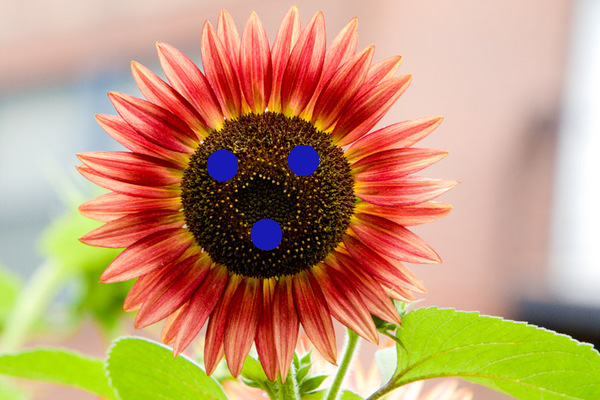
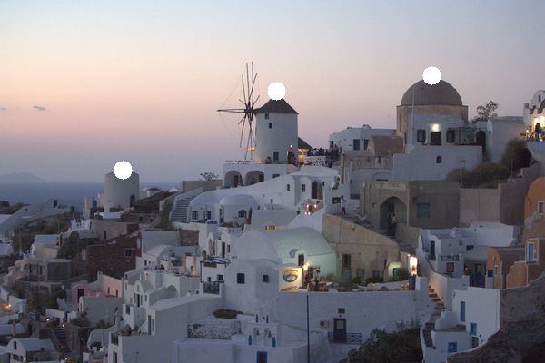
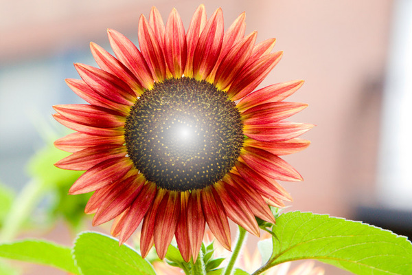
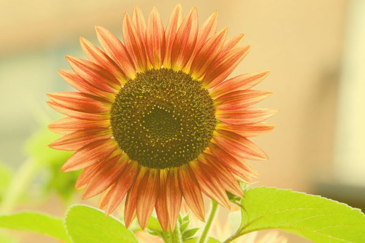

CAP4730 / CAP5726 Assignment 0Warm-up — Batch Mode
Switch to: Interactive Editor
- (2.0) Fill
- (3.0) Brush
- (3.0) Soft Brush
- (extra) Soft Fill
- (2.0) Report and Demo Video (Recordings)
Fill
Iterates over every pixel in the image and call image.setPixel(x, y, color). Fills the entire image.
results:
Push_Image=flower.jpg&Fill=[0.142370997229,0.142509677694,0.764679664899,1]
![Push_Image=flower.jpg&Fill=[0.142370997229,0.142509677694,0.764679664899,1]](batch.html?Push_Image=flower.jpg&Fill=[0.142370997229,0.142509677694,0.764679664899,1]){kind=link}
Brush
For each brush center and radius the pixels are looped over, (x-cx)^2 + (y-cy)^2 <= r^2 is used to test whether each pixel is inside the circle. If true then the pixel is overwritten with the color.
results:
Push_Image=flower.jpg&Brush=16;[0.0968858131488,0.0968858131488,0.705882352941,1];x222y165x303y160x266y234

Push_Image=town.jpg&Brush=10;[1,1,1,1];x475y83x304y100x135y187

![Push_Image=flower.jpg&Brush=16;[0.0968858131488,0.0968858131488,0.705882352941,1];x222y165x303y160x266y234](batch.html?Push_Image=flower.jpg&Brush=16;[0.0968858131488,0.0968858131488,0.705882352941,1];x222y165x303y160x266y234){kind=link}
![Push_Image=town.jpg&Brush=10;[1,1,1,1];x475y83x304y100x135y187](batch.html?Push_Image=town.jpg&Brush=10;[1,1,1,1];x475y83x304y100x135y187){kind=link}
Soft Brush
Same concept as brush, but the opacity decreases with distance using a = alpha_at_center * (1 - d / r) * color.a. The source pixel is them blended with the brush color using multiplied by and plus. the blended result is then sent back producing a soft edged brush
results:
Push_Image=flower.jpg&Soft_Brush=91;[1,1,1,1];1;x269y193

![Push_Image=flower.jpg&Soft_Brush=91;[1,1,1,1];1;x269y193](batch.html?Push_Image=flower.jpg&Soft_Brush=91;[1,1,1,1];1;x269y193){kind=link}
Soft Fill
Every pixel is blended with the target color using an opacity factor. out = src*(1-a) + color*a is used to compute where a is the opacity value. MultipliedBy and plus are then used to perform the blending and then the results are written back. fills the image with semi transparent color.
results:
Push_Image=flower.jpg&Soft_Fill=[0.95,0.85,0.20,1];0.35
![Push_Image=flower.jpg&Soft_Fill=[0.95,0.85,0.20,1];0.35](batch.html?Push_Image=flower.jpg&Soft_Fill=[0.95,0.85,0.20,1];0.35){kind=link}
Report and Demo Video (Recordings)
(Please include the video file name or link here...)